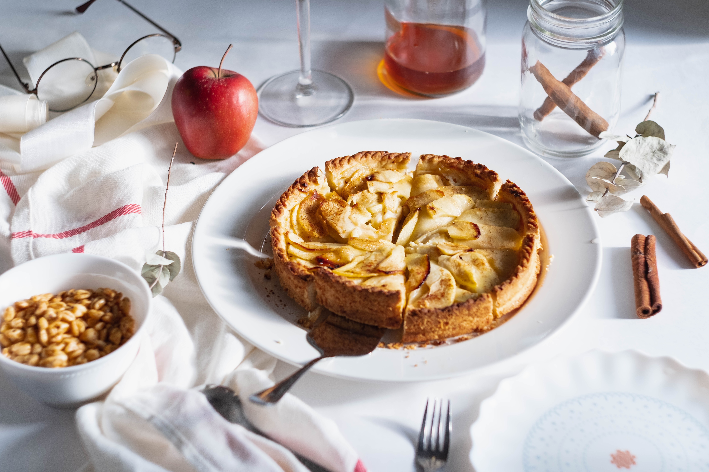

Tarta de manzana
Ingredientes:
- 2 tazas de harina
- 1/2 taza de azúcar
- 1/2 taza de mantequilla fría
- 1/4 de taza de agua fría
- 4 manzanas
- 1/2 taza de azúcar morena
- 1 cucharadita de canela
Instrucciones:
- Prepara la masa de la tarta mezclando la harina, el azúcar y la mantequilla fría en un tazón. Agrega el agua fría y forma una masa. Refrigera por 30 minutos.
- Pela y corta las manzanas en rodajas finas.
- En un tazón aparte, mezcla el azúcar morena y la canela.
- Extiende la masa de la tarta en un molde para tarta. Coloca las rodajas de manzana en la masa y espolvorea la mezcla de azúcar y canela por encima.
- Hornea la tarta a 180°C durante 40-45 minutos, o hasta que esté dorada y las manzanas estén tiernas.
- Deja enfriar antes de servir. Puedes acompañar la tarta con helado de vainilla si lo deseas.

Mousse de Chocolate
Ingredientes:
- 200 g de chocolate oscuro
- 4 huevos
- 2 cucharadas de azúcar
- 1 taza de crema batida
Instrucciones:
- Derrite el chocolate oscuro en baño maría y déjalo enfriar un poco.
- En un tazón aparte, bate las yemas de huevo con el azúcar hasta obtener una mezcla espumosa.
- En otro tazón, bate las claras de huevo a punto de nieve.
- Agrega el chocolate derretido a la mezcla de yemas y azúcar, y mezcla bien.
- Incorpora suavemente las claras batidas a la mezcla de chocolate.
- En otro recipiente aparte, bate la crema batida hasta obtener una consistencia firme.
- Agrega la crema batida a la mezcla de chocolate y mezcla suavemente hasta que esté bien combinado.
- Refrigera el mousse durante al menos 2 horas antes de servir.
- Sirve en copas individuales y decora con chocolate rallado o virutas de chocolate.